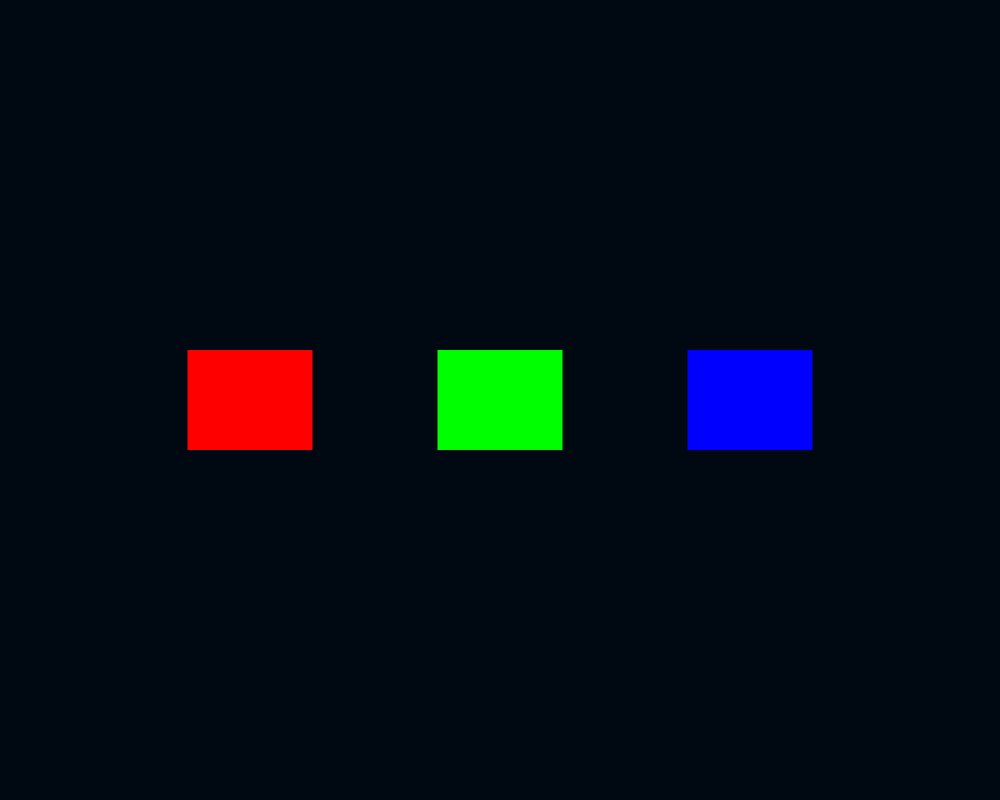

How to write a custom visual¶
Warning
You need to go through the Vulkan crash course before following this guide.
In this section, we'll show how to create a custom visual based on an existing graphics pipeline, so without writing custom GLSL shaders.
Note
Only the C API supports custom visuals at the moment. Python bindings for custom visuals will come in an upcoming version.
The full source code for this example can be found in examples/custom_visual.c.
We'll make a square visual that makes it easy to add uniformly-colored squares to the scene.

What is a visual?¶
The visual is the most important abstraction in Datoviz. It abstracts away the internal details related to GPU rendering and proposes a user-friendly interface to set up visual elements.
Generally speaking, adding a new visual to a panel involves the following steps:
- choosing one of the existing visuals on the visual reference page,
- preparing the data to match the format expected by the visual properties,
- setting the visual properties with the data.
Visual properties, or "props"¶
Each predefined visual comes with a set of predefined visual properties, also called props. For example, the marker visual has props for: point position, color, marker size, marker type, angle, and so on.
The visual reference page presents the list of all predefined visuals along with their sets of props. You'll probably refer a lot to this page since it contains the most important information you'll need for your visualizations.
Each prop is defined by:
- a name,
- a data type (for example
float32,uint8), - a description of how the prop is used for rendering.
Note
The Python API takes care of converting each prop to the correct data type using NumPy ndarray.astype(). Most props accepting floating-point numbers require single-precision format since this is the optimal format for GPUs. The notable exception is the POS prop (position), which requires double-precision data. Datoviz provides an internal CPU-based data transformation system that requires double precision (single-precision would not be acceptable for scientific data handling). Also, visuals that implement triangulation require double precision. Datoviz converts the transformed position to single-precision at the last moment before uploading it to the GPU.
Batch rendering¶
Another crucial notion related to visuals is batch rendering. For performance reasons, it is recommended to use as few visuals as possible in a given scene. For example:
- to display a scatter plot with 100 points, use a single
markervisual with 100 points, instead of100 visuals with one point, - to display 100 polygons, use a single
polygonvisual with 100 items (each containing an arbitrary number of points), instead of100 visuals, - similarly with paths, images, meshes, text, and so on.
This allows the GPU to render all of these different objects of the same type in a single draw command (with the same GPU transformation matrices).
To define multiple objects with various sizes in a given visual (for example, displaying multiple paths with the same visual), one typically concatenates all points and properties in big arrays (total size is the sum of all object sizes), and use the special prop length to define the length of each object (vector with as many elements as there are different objects).
Distinction between graphics and visuals¶
Datoviz makes the distinction between a graphics (graphics pipeline) and a visual:
- a graphics is a GPU-level object. It is defined by a vertex shader, a fragment shader, a primitive type (point, line, triangle), and other details.
- a visual is a user-level object. It encapsulates a particular type of visual element and abstracts away the GPU implementation details. A visual is defined by one or several graphics pipelines, optional compute pipelines, and a set of visual properties that allow the user to specify the visual's data.
Importantly, the user doesn't need to know the internal implementation details of a visual to use it. It is normally sufficient to know the props specification.
Making a custom visual based on existing graphics¶
In this section, we'll show how to create a custom visual by reusing an existing graphics (without writing custom shaders). The main use-case for this scenario is making a visual with a custom CPU data transformation pipeline.
An example is polygon triangulation: since the GPU can only render triangles, one needs to triangulate an arbitrary shape before rendering it. The triangulation is implemented at the level of the visual, so that the user can pass the polygon points without having to triangulate it manually. The visual makes the triangulation internally, and generates the triangles required by the underlying graphics pipeline.
In the simple example below, we'll implement a simple square visual with a trivial triangulation (two triangles per square). The custom square visual will provide the following props:
| Type | Index | Type | Description |
|---|---|---|---|
pos |
0 | dvec3 |
square center position |
color |
0 | cvec4 |
square color |
length |
0 | float |
edge length |
The underlying graphics will be the triangle graphics, where three successive vertices define a single independent triangle. Each square will be triangulated into two triangles, or six vertices. This square visual will be easier to use than the triangle one, since the user won't have to deal with triangulation manually.
Here is the code to define the three visual props:
// pos prop, dvec3 data type
dvz_visual_prop(visual, DVZ_PROP_POS, 0, DVZ_DTYPE_DVEC3, DVZ_SOURCE_TYPE_VERTEX, 0);
// color prop, cvec4 data type
dvz_visual_prop(visual, DVZ_PROP_COLOR, 0, DVZ_DTYPE_CVEC4, DVZ_SOURCE_TYPE_VERTEX, 0);
// length prop, float data type
dvz_visual_prop(visual, DVZ_PROP_LENGTH, 0, DVZ_DTYPE_FLOAT, DVZ_SOURCE_TYPE_VERTEX, 0);
Vertex shader attributes, vertex buffer, vertex structure¶
To each graphics is associated a particular vertex shader. A vertex shader defines a list of attributes, which correspond to the different vertex inputs. For example, the triangle graphics we will use in this example has two attributes in its vertex shader:
// This GLSL code is at the beginning of the triangle graphics vertex shader.
// Two attributes:
layout (location = 0) in vec3 pos; // vertex position
layout (location = 1) in vec4 color; // vertex color
In Datoviz, the input data feeding these vertex shader attributes is stored in a GPU buffer called the vertex buffer. The GPU buffer contains a contiguous array of structure elements that match exactly these attributes. Here, the vertex structure of the triangle graphics, and of the other basic graphics, is the standard DvzVertex structure:
struct DvzVertex
{
vec3 pos; // three single-precision floating-point numbers for x, y, z position
cvec4 color; // four uint8 bytes for the r, g, b, a color components
}
The vertex shader executes in parallel over all structure elements stored in the vertex buffer.
We'll see in the custom graphics page more details about how we link this C structure to the GLSL attributes.
The main role of the visual is to copy the user-specified props data into the vertex buffer. This is sometimes straightforward, like in the marker visual, where each vertex corresponds to one marker, but it is often less trivial. In the example covered in this page, where we need to transform squares into triangles, our custom visual will need to create six vertices in the vertex buffer for every square passed by the user. This is implemented in the visual baking function.
Visual baking function¶
Once the props are defined, the most important step when creating a custom visual is to implement the baking function.
The baking function takes the props data as input, and fills in the vertex buffer, as well as, possibly, other GPU data sources (uniforms, storage buffers, textures).
Here, the square baking function must recover the pos and length props in order to compute the four corner position of each square, and make the triangulation with two triangles per square.
The props and the vertex buffer (and other sources) come with DvzArray instances, which are thin wrappers around 1D arrays of homogeneous data types. They support few features: no multidimensional arrays, no vectorized operations.
// The following code snippet contains the body of the baking function.
static void _bake_callback(DvzVisual* visual, DvzVisualDataEvent ev)
{
ASSERT(visual != NULL);
// First, we obtain the array instances holding the prop data as specified by the user.
DvzArray* arr_pos = dvz_prop_array(visual, DVZ_PROP_POS, 0);
DvzArray* arr_color = dvz_prop_array(visual, DVZ_PROP_COLOR, 0);
DvzArray* arr_length = dvz_prop_array(visual, DVZ_PROP_LENGTH, 0);
// We also get the array of the vertex buffer, which we'll need to fill with the triangulation.
DvzArray* arr_vertex = dvz_source_array(visual, DVZ_SOURCE_TYPE_VERTEX, 0);
// The number of rows in the 1D position array (set by the user) is the number of squares
// requested by the user.
uint32_t square_count = arr_pos->item_count;
// We resize the vertex buffer array so that it holds six vertices per square (two triangles).
dvz_array_resize(arr_vertex, 6 * square_count);
// Pointers to the input data.
dvec3* pos = NULL;
cvec4* color = NULL;
float* length = NULL;
// Pointer to the output vertex.
DvzVertex* vertex = (DvzVertex*)arr_vertex->data;
// Here, we triangulate each square by computing the position of each square corner.
float hl = 0;
for (uint32_t i = 0; i < square_count; i++)
{
// We get a pointer to the current item in each prop array.
pos = dvz_array_item(arr_pos, i);
color = dvz_array_item(arr_color, i);
length = dvz_array_item(arr_length, i);
// This is the half of the square size.
hl = (*length) / 2;
// First triangle:
// Bottom-left corner.
vertex[6 * i + 0].pos[0] = pos[0][0] - hl;
vertex[6 * i + 0].pos[1] = pos[0][1] - hl;
// Bottom-right corner.
vertex[6 * i + 1].pos[0] = pos[0][0] + hl;
vertex[6 * i + 1].pos[1] = pos[0][1] - hl;
// Top-right corner.
vertex[6 * i + 2].pos[0] = pos[0][0] + hl;
vertex[6 * i + 2].pos[1] = pos[0][1] + hl;
// Second triangle:
// Top-right corner again.
vertex[6 * i + 3].pos[0] = pos[0][0] + hl;
vertex[6 * i + 3].pos[1] = pos[0][1] + hl;
// Top-left corner.
vertex[6 * i + 4].pos[0] = pos[0][0] - hl;
vertex[6 * i + 4].pos[1] = pos[0][1] + hl;
// Bottom-left corner (again).
vertex[6 * i + 5].pos[0] = pos[0][0] - hl;
vertex[6 * i + 5].pos[1] = pos[0][1] - hl;
// We copy the square color to each of the six vertices making the current square.
// This is a choice made in this example, and it is up to the custom visual creator
// to define how the user data, passed via props, will be used to fill in the vertices.
for (uint32_t j = 0; j < 6; j++)
memcpy(vertex[6 * i + j].color, color, sizeof(cvec4));
}
}
Putting everything together¶
Here is the code to create the custom visual.
// We create a blank visual in the scene.
// For demo purposes, we disable the automatic position normalization.
DvzVisual* visual = dvz_blank_visual(scene, DVZ_VISUAL_FLAGS_TRANSFORM_NONE);
// We add the existing graphics triangle graphics pipeline.
dvz_visual_graphics(visual, dvz_graphics_builtin(canvas, DVZ_GRAPHICS_TRIANGLE, 0));
// We add the vertex buffer source, and we must specify the same vertex struct type
// as the one used by the graphics pipeline (standard vertex structure, with pos and color).
dvz_visual_source(
visual, DVZ_SOURCE_TYPE_VERTEX, 0, DVZ_PIPELINE_GRAPHICS, 0, 0, sizeof(DvzVertex), 0);
// We specify the visual props.
dvz_visual_prop(visual, DVZ_PROP_POS, 0, DVZ_DTYPE_DVEC3, DVZ_SOURCE_TYPE_VERTEX, 0);
dvz_visual_prop(visual, DVZ_PROP_COLOR, 0, DVZ_DTYPE_CVEC4, DVZ_SOURCE_TYPE_VERTEX, 0);
dvz_visual_prop(visual, DVZ_PROP_LENGTH, 0, DVZ_DTYPE_FLOAT, DVZ_SOURCE_TYPE_VERTEX, 0);
// We declare our custom baking function.
dvz_visual_callback_bake(visual, _bake_callback);
// Finally, once the custom visual has been created, we can add it to the panel.
dvz_custom_visual(panel, visual);
Once the custom visual has been created and added to the scene, the last step consists of setting some data, as usual:
// We define three squares.
dvz_visual_data(
visual, DVZ_PROP_POS, 0, 3, (dvec3[]){{-.5, 0, 0}, {0, 0, 0}, {+.5, 0, 0}});
// We use a different color for each square.
dvz_visual_data(
visual, DVZ_PROP_COLOR, 0, 3,
(cvec4[]){{255, 0, 0, 255}, {0, 255, 0, 255}, {0, 0, 255, 255}});
// NOTE: we use the same length for all squares.
dvz_visual_data(visual, DVZ_PROP_LENGTH, 0, 1, (float[]){.25});
Note that we used a single value for the last prop (edge length). Datoviz uses the convention that a prop may have less values than objects, in which case the last value is repeated over. In particular, defining a prop with a single element means using the same value for all items in the visual. This is a sort of "broadcasting" rule (following NumPy's terminology).
Other topics¶
We didn't yet cover these other aspects:
- Position data transformation,
- Visual parameters stored in the uniform buffer,
- Visual flags.